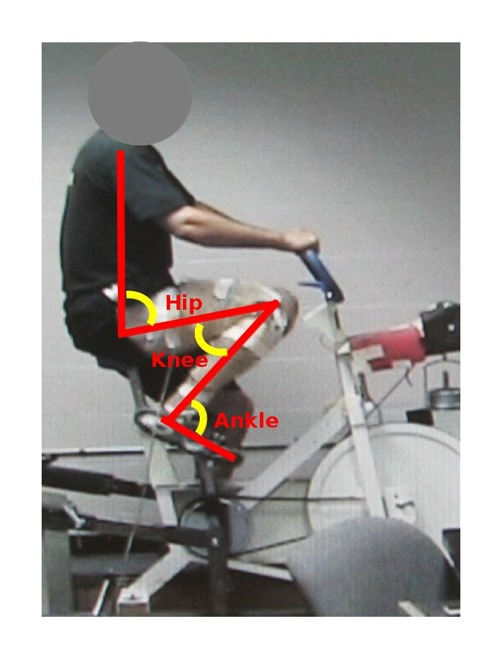

Contents | About | Contact
article 25, issue 10
Determination of the optimal crank arm length to maximize peak
power production in an upright cycling position
Danny Too and Christopher D. Williams
July 12, 2018Editors' note
It has not been possible to present a condensed HTML-version here as we have done up to now, only the abstract with its main finding, and one figure. Please see the authors' original full paper (PDF 480 kB). The equation gives shorter crank lengths than usual even for large persons. A conclusion is therefore to use shorter than normal cranks if the object is peak power.
Abstract
The purpose of this paper was to determine: (1) the crank arm length that would maximize peak power production in an upright cycling position; (2) the joint angles corresponding to this crank arm length; (3) which joint angles (minimum, maximum, range of motion of the hip, knee and ankle) would be the best predictor(s) of the crank arm length; and (4) develop regression equations to predict the optimal crank arm length for individuals of different leg lengths. The data from Too and Landwer (2000) was examined, in conjunction with the data collected in this study, and combined for use in regression analysis. With stepwise multiple regression, the following equation was determined to best predict crank arm lengths that would maximize peak power production in an upright cycling position for individuals of different leg lengths:
CAL [mm] = (238 [mm] – 0.25 * (Tot Leg) [mm] + 0.3 * (Low Leg) [mm]) ± 22 [mm]
As with any prediction equation, caution must be taken when interpreting and extrapolating the results.

Minimum Hip, Knee, and Ankle Angle for 250 mm Crank Arm Length (Supplemental Figure)
About the authors
Danny Too is an associate professor in the Department of Kinesiology, Sport Studies, and Physical Education at The College at Brockport, State University of New York, and has been involved in human powered vehicle research since 1985.
Christopher D. Williams is an associate professor in the Department of Kinesiology, Sport Studies, and Physical Education at The College at Brockport, State University of New York.
Contact Address:
Danny Too
The College at Brockport, State University of New York
350 New Campus Drive
Brockport, New York 14420, USA
Email: dtoo AT brockport.edu
Download the complete article PDF (480 kB)